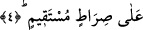
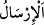
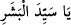

peygamber değilsin. Allah bize hiçbir elçi göndermemiştir.” sözleriyle ortaya
koydukları inkârı reddetmek içindir.
“ (gönderme)” rüzgârı ve yağmuru göndermek gibi bazen emre âmâdelik için
olur. Bazen de elçiler göndermek gibi ihtiyar ve tercih sahibi olan zâtın göndermesiyle
olur. Nitekim el-Müfredât’ta böyle geçmektedir.
Bahru’l-ulûm’da der ki: “Gönderilen (Kur’an) ile kendisine gönderilen (Hz.
Peygamber (s.a.) arasındaki tenâsüb/uyumdan dolayı bu yemin güzel ve eşsiz
yeminlerdendir. Bunlardan birisi kendisine yemin edilen ve indirilen Kur’an, diğeri ise
üzerine yemin edilen ve Kur’an’ın kendisine indirildiği zattır.”
“Sen şüphesiz peygamberlerdensin” sözüyle Allah tarafından yapılan bu şâhitlik,
Allah Teâlâ’nın “Kâfir olanlar: Sen resûl olarak gönderilmiş bir kimse değilsin”
derler. De ki: “Benimle sizin aranızda şâhid olarak Allah ve yanında Kitab’ın
bilgisi olan (Peygamber) yeter.” (er-Ra’d, 13/43) sözüyle işâret edilen şâhitlik
cümlesindendir.
Allah
Teâlâ
kitabında
Hz.
Peygamber
(s.a.)’den
başka
peygamberlerinden hiçbirinin risâletine yemin etmemiştir. İnsânü’l-uyûn’da der ki:
“Hz. Peygamber (s.a.)’e has özelliklerden birisi de Allah Teâlâ’nın “Yâsîn, Hikmet
dolu Kur’an hakkı için, Sen şüphesiz peygamberlerdensin.” buyurarak O’nun (s.a.)
risâletine yemin etmesidir.”
Şeyh Sa’dî der ki:
Bilmem ki ben ne söyleyeyim?
Çünkü sen benim her söylediğimden daha yücesin.
Senin yüceliğini göstermek için “Levlâk” hitabı,
Seni medh için “Tâhâ” ve “Yâsîn” sözleri yeter.
“Tâhâ”nın Peygamberimiz (s.a.)’e övgü olmasının mânâsı şudur: Hz. Peygamber
(s.a.) geceleri ayakları şişinceye kadar namaz kılıp ibâdet ederdi. Bundan dolayı Allah
Teâlâ: “Tâhâ” “Ey Tâhâ veya ey şefaat tâlibi ve beşeriyete yol gösteren! “Biz
Kur’an’ı sana güçlük çekesin diye indirmedik.” buyurdu. (Tâhâ, 20/2). Bazıları der
ki: “Tâ” dokuz, “hâ” ise beştir. (Toplamı on dörttür.) Bunun mânâsı: ‘Ey dolunay gecesi
nur saçan ay gibi olan!’ demektir.
“Yâsîn”in övgü olmasının mânâsı ise zikredilen Hz. Peygamber (s.a.)’in risâletine
yapılan yeminlerdir. Bununla birlikte -daha önce geçtiği üzere- “Yâsîn” ile “ (Ey beşerin efendisi)” ve benzeri mânâların da murad edilmiş olması mümkündür. Bu
da Allah Teâlâ’dan bir övgüdür. Hem de ne övgü!